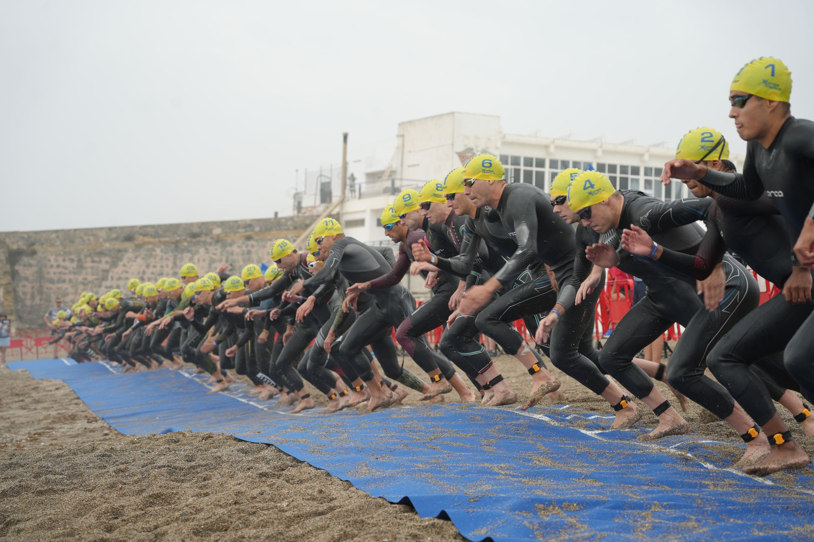
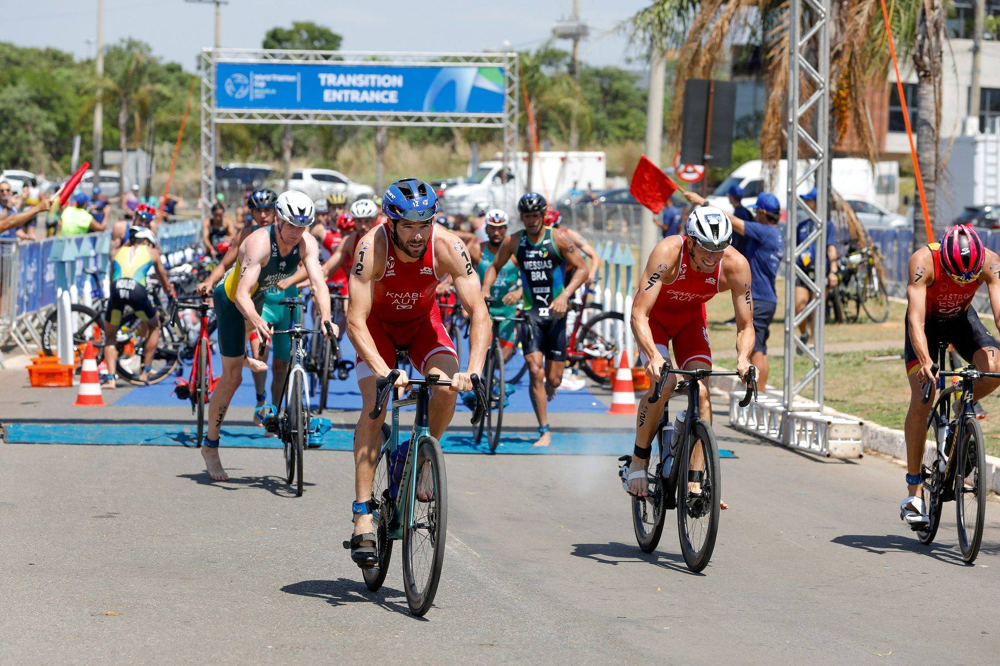
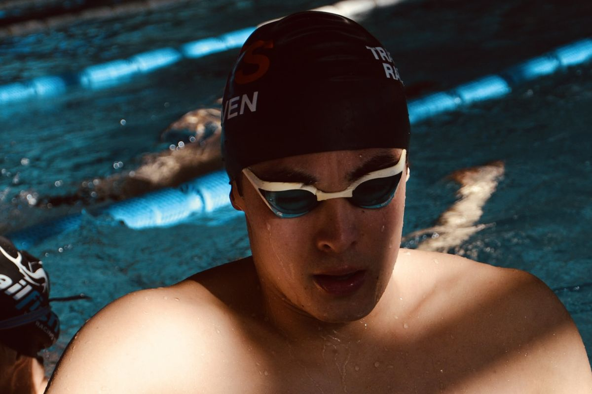
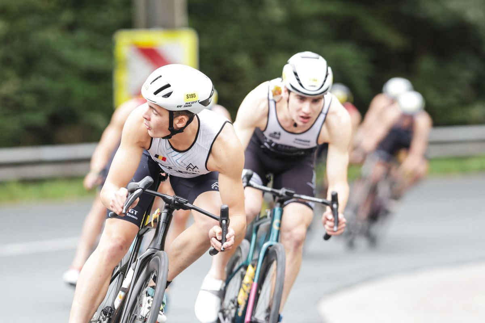
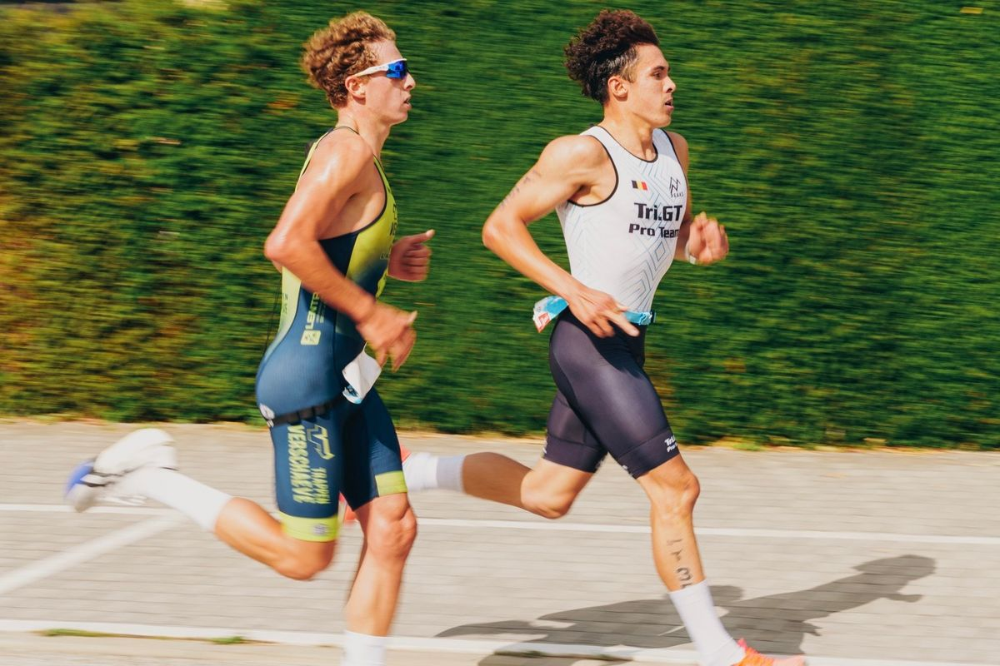
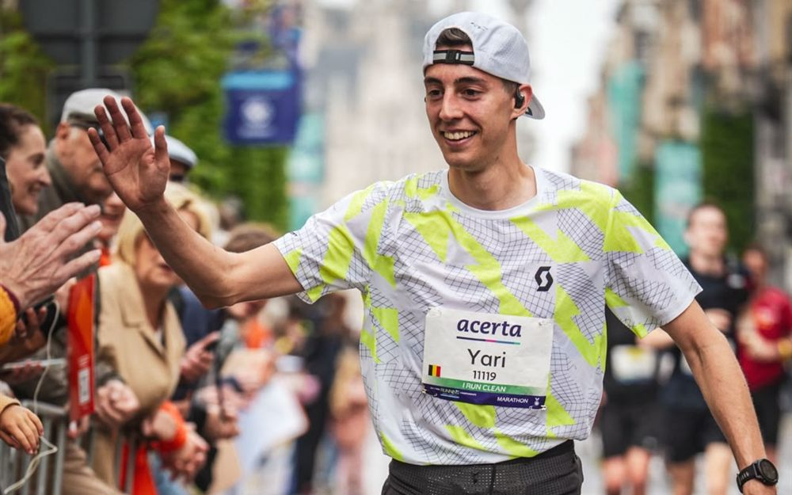
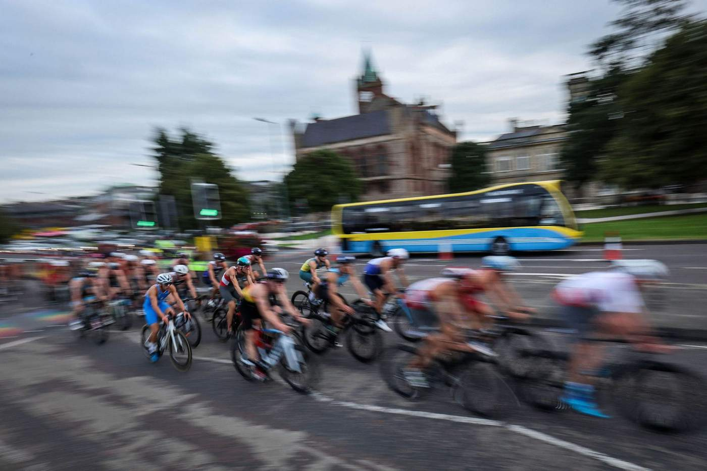

Triatlon-, zwem-, fiets- en loopcoaching · elk niveau
Beyond Performance
Beyond
Performance
Purposeful coaching. Lasting impact.
Sport is meer dan alleen presteren. Het is een manier om jezelf uit te dagen, grenzen te verleggen en te groeien, zowel als atleet als persoon. Met Beyond Performance wil ik atleten begeleiden om hun potentieel te blijven ontwikkelen, met aandacht voor duurzame progressie en een positieve impact die verder reikt dan de sport zelf.
Iedere atleet heeft zijn eigen ambities, mogelijkheden en uitdagingen. Daarom geloof ik in een persoonlijke aanpak, waarbij elke training een duidelijk doel heeft binnen een doordacht langetermijnplan.
Door rekening te houden met je capaciteiten, herstel en omstandigheden buiten de sport, stemmen we de trainingsbelasting af op wat voor jou haalbaar en effectief is. Zo bouwen we op een efficiënte en verantwoorde manier aan consistente vooruitgang, ongeacht je niveau of beschikbare tijd.
Ik geloof dat potentieel niet vaststaat, maar voortdurend verder ontwikkeld kan worden. Wat vandaag de grens lijkt, hoeft dat morgen niet meer te zijn.
Als atleet en coach probeer ik zelf steeds de lat hoger te leggen. Niet door simpelweg meer of harder te werken, maar door kritisch te blijven, bij te leren en te zoeken naar manieren om beter te worden. Die ingesteldheid vormt ook de basis van mijn coaching.
Het najagen van ambities is een proces waarin je voortdurend keuzes maakt, ontdekt wat werkt en leert uit wat anders loopt dan verwacht. Wie daarvoor openstaat, kan uit die ervaringen inzichten halen die ook op andere vlakken van het leven waardevol zijn.
Hoeveel plaats sport inneemt, verschilt van persoon tot persoon. Voor een topsporter kan die terecht de hoogste prioriteit hebben, terwijl anderen hun trainingen combineren met werk, gezin of andere verantwoordelijkheden. In beide gevallen wil ik een aanpak vinden die jouw ambities maximaal ondersteunt en tegelijk op lange termijn haalbaar blijft.
Dat is Beyond Performance.

Je coach
Neal Van Vaerenbergh
Ik ben elite-triatleet en race zelf op internationaal niveau. Duursporters coachen doe ik al sinds 2014.
In 2019 hield een overtrainingssyndroom me bijna vier jaar weg uit competitie. Ik vond mijn weg terug en stond in 2025 en 2026 opnieuw op het podium van het Belgisch kampioenschap. Die weg leerde me meer over training, herstel en geduld dan eender welk boek.
Die ervaring, samen met mijn trainersopleidingen en wat ik als atleet elke dag zelf ondervind, bepaalt hoe ik vandaag coach: doordacht, persoonlijk en met oog voor wat haalbaar is.
Lees mijn volledige verhaal →Waarin kan ik je begeleiden?

Multisport
Triatlon & duatlon
Vraag je programma aan →Of focus op één sport

Zwemmen
Techniek & prestatieontwikkeling
Vraag je programma aan →
Fietsen
Doelgericht sterker worden
Vraag je programma aan →
Lopen
Efficiënt & duurzaam ontwikkelen
Vraag je programma aan →Hoe nauw volg ik je op?
Foundation
Gerichte begeleiding op afstand.
- Persoonlijk trainingsschema via TrainingPeaks
- Wekelijkse online opvolging en bijsturing
- Analyse van trainingsdata
- Testmomenten op afstand, geïntegreerd in de trainingen
Progress
Nauwere opvolging. Meer persoonlijke afstemming.
- Alles uit Foundation
- Persoonlijk contact en opvolging, indien nodig meerdere keren per week
- Frequentere evaluatie en bijsturing
- Minstens één inspanningstest per jaar
- Kracht- en mobiliteitsschema's optioneel
Peak
Intensieve begeleiding, tot in de praktijk.
- Alles uit Progress
- Nauwe, persoonlijke samenwerking
- Minstens één begeleide trainingssessie per week in persoon
- Individuele kracht- en mobiliteitsschema's inbegrepen
- Inspanningstesten op maat, wanneer nodig
- Voortdurende afstemming van training, herstel en prestaties
Wat atleten erover zeggen

"Ik heb enkele jaren met Neal gewerkt toen ik na een break van twee jaar opnieuw wou gaan koersen. Het was geen makkelijke taak, omdat ik van nul moest opbouwen. Neal heeft toen sterk op mijn basis gefocust, omdat die heel zwak was. Veel rustige kilometers, maar toch met voldoende variatie in de trainingen.
Het resultaat mocht er zijn, want na een opbouw van een paar maanden wist ik meteen een top 10 te rijden in mijn eerste wedstrijd van het jaar. Ik reed de hele dag in de kopgroep met sterke renners. Andere uitschieters waren een elfde plaats op het BK gravel bij de profs en een provinciale titel op de weg bij de elite 2.
Neal speelde als trainer altijd kort op de bal. Als er een probleem was, merkte hij dat meteen op en deed hij de nodige aanpassingen. Ik zou Neal als trainer omschrijven als een totaalpakket. Daarmee bedoel ik dat hij met alles rekening houdt: coretraining, voeding, mentale coaching…
Neal is ook een heel rustig persoon met wie je alles kunt bespreken. Dat vind ik een heel belangrijke eigenschap voor een coach.
Als je op zoek bent naar een coach die het beste in je naar boven haalt, zou ik niet twijfelen."

"Mijn ervaring met Neal was fantastisch! Toen ik me inschreef voor een marathon, was mijn conditie eigenlijk zo goed als nul. Daarom ging ik op zoek naar professionele begeleiding om op een gestructureerde manier naar dit ambitieuze doel toe te werken.
Neal stelde een trainingsprogramma op dat perfect aansloot bij mijn beschikbare tijd en persoonlijke situatie. In amper 7 maanden tijd slaagden we erin om van nul naar een volledige marathon te gaan! Ook wanneer er door ziekte aanpassingen nodig waren, verliep de communicatie steeds vlot en duidelijk.
Dankzij zijn begeleiding stond ik op de dag van de marathon in uitstekende conditie aan de start. Het resultaat? De volledige marathon met een glimlach kunnen lopen en finishen in 3u10!
Voor mijn volgende sportieve uitdaging zou ik zonder twijfel opnieuw voor Neal kiezen. Een absolute aanrader!"
Hoe we starten
- 1Gratis intakeWe bespreken je doel en je situatie.
- 2Je planEen persoonlijk schema via TrainingPeaks.
- 3Samen bijsturenWe passen aan waar nodig.
Vragen
Wanneer is Vector Endurance geschikt voor mij?
Als je gemotiveerd bent om te groeien in triatlon, duatlon, zwemmen, fietsen of lopen, en dat proces zo goed mogelijk wil aanpakken. Je niveau maakt daarbij niet uit: of je nu naar je eerste wedstrijd toewerkt of mikt op een podium, wat telt is je wil om vooruit te gaan.
Je krijgt een plan dat vertrekt van jouw doelen en past in jouw leven: je werk, je gezin, je herstel. Want Beyond Performance betekent dat het om meer gaat dan trainen alleen. Sport is een levensstijl, en die moet voor jou haalbaar blijven, ook op lange termijn.
Hoe lang duurt een traject?
Dat hangt af van je doel. Hoe meer voorbereidingstijd je hebt, hoe beter we je kunnen klaarstomen. Werk je naar een specifieke wedstrijd toe, dan stemmen we het traject daarop af.
Is dit iets voor mijn niveau?
Ja. Van je eerste wedstrijd tot elite: het plan vertrekt van waar jij nu staat, en van hoe training in je huidige leven past.
Hoeveel uur per week moet ik trainen?
Dat hangt af van je doel en wat voor jou haalbaar is. We bekijken het samen tijdens de intake.
Coach je online of live?
Foundation is volledig online. In Progress plan ik minstens één inspanningstest per jaar, en in Peak trainen we minstens één keer per week samen.
Kan ik stoppen wanneer ik wil?
Ja. Je kan stoppen wanneer je wil: de begeleiding is maandelijks opzegbaar.

Klaar om
te starten?
Benieuwd naar mijn races?
Mijn verhaal sinds mijn eerste triatlon, al mijn uitslagen en de mooiste beelden van onderweg.